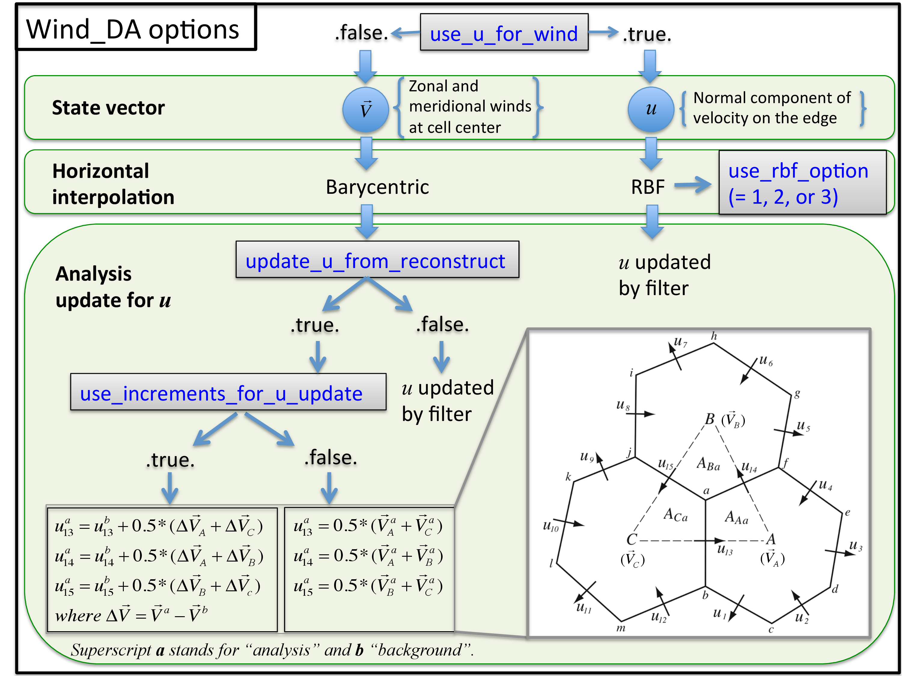
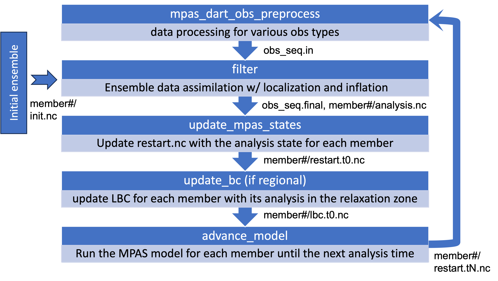

This web page is intended to help a new user set up the DART data assimilation system with the Model for Prediction Across Scales (MPAS). The details of the steps in each section can be viewed by clicking on the headers. For the description of the system, go to the overview in Section 3.
While going through this guide you may find it helpful to have a copy of the DART On-line
documentation open in another window.
Click here to open the DART Documentation
in a new window.
You may also find it helpful to have the
MPAS-Atmosphere Users' Guide available in another window as well.
Click here
to open the MPAS Users' Guide (for Version 8.0) in a new window.
DART is tailored to work with the unchanged MPAS Atmosphere model, so before starting to install and run DART you should follow the steps to download and run MPAS-A first. Once that is complete, then the next step is to download DART and build it. Information about installing and running MPAS-A can be found at https://www2.mmm.ucar.edu/projects/mpas/tutorial/v8.0/index.html.
DART requires the NetCDF libraries, an MPI-2 implementation, and access to Matlab to run the diagnostic routines. The scripting is mostly in C-Shell with some Bash.
If you have access to the NSF NCAR derecho HPC system, DART will run there with the addition of loading the HDF module (see below for more details.)
DART is a community facility which includes a collection of tools and utilities for Data Assimilation. It is distributed as source code because there are many options and customizations which need to be selected at compile time. The instructions in this section will explain how to obtain a copy of the DART source code directly from the DART GitHub repository. We'll then compile the executables associated with the Lorenz 1996 model (lorenz_96) and run some simple tests to verify things are working. Then we'll do the same with the MPAS Atmospheric model (mpas_atm).
The DART code is distributed directly from the GitHub repository where it is developed. While it's possible to navigate to https://github.com/NCAR/DART and obtain the code by clicking on the "Code" -> "Download ZIP" option, it's better to clone the repository directly on the command-line.
Normally the main DART repository should be used when starting a data assimilation project. But for this tutorial only, there is updated code for Regional MPAS and Radar obs support which is not yet in the main DART repository. The following command should be used to download the DART code from a different repository.
From within your ${HOME} directory run:
$ git clone https://whatever your own repo is syha... DART $ git checkout name_of_right_branch
For other uses, the main DART repo code can be downloaded with this command:
$ git clone https://github.com/NCAR/DART.git DART
Cloning the DART repository may take several minutes and at the end of the process the output to the terminal should look something like the following:
Cloning into 'DART'... remote: Enumerating objects: 109322, done. remote: Counting objects: 100% (1659/1659), done. remote: Compressing objects: 100% (754/754), done. remote: Total 109322 (delta 974), reused 1498 (delta 897), pack-reused 107663 Receiving objects: 100% (109322/109322), 634.19 MiB | 2.55 MiB/s, done. Resolving deltas: 100% (80536/80536), done. Updating files: 100% (3403/3403), done.
We should now have an DART directory:
$ ls -l DART total 224 -rw-r--r-- 1 user staff 62453 Oct 19 2023 CHANGELOG.rst -rw-r--r-- 1 user staff 11377 Oct 19 2023 LICENSE -rw-r--r-- 1 user staff 2069 Oct 19 2023 README.md drwxr-xr-x 6 user staff 192 Oct 19 2023 assimilation_code drwxr-xr-x 24 user staff 768 Oct 24 2023 build_templates -rw-r--r-- 1 user staff 3226 Oct 19 2023 conf.py -rw-r--r-- 1 user staff 613 Oct 19 2023 copyright.rst drwxr-xr-x 14 user staff 448 Oct 19 2023 developer_tests drwxr-xr-x 3 user staff 96 Oct 19 2023 diagnostics drwxr-xr-x 83 user staff 2656 Oct 19 2023 guide -rw-r--r-- 1 user staff 21017 Oct 19 2023 index.rst drwxr-xr-x 52 user staff 1664 Oct 19 2023 models drwxr-xr-x 4 user staff 128 Oct 19 2023 observations drwxr-xr-x 4 user staff 128 Oct 19 2023 theory
That's it! We now have a copy of the latest release of the DART source code.
DART includes compiler and machine-specific makefiles for many common platforms.
$ cd DART/build_templates $ ls -l
Look for the mkmf.tempate.xxx or mkmf.template.xxx.xxx which is closest to your compiler and platform. Link or copy it into a file named mkmf.template, e.g.:
$ cp mkmf.template.gfortran mkmf.template $
Before beginning the compilation process, it's worth verifying that we have the MPI compiler wrappers in our path, and that the environment variable pointing to the netCDF libraries are set:
$ which mpif90 /usr/local/cmpwrappers/mpif90 $ echo $NETCDF /usr/local/netcdf-4.7.0-gcc
If you are running on the NSF NCAR derecho computer, you may need to add the HDF module to your environment before building:
$ module load hdf
If you want to compile in a single precision (r4), edit DART/assimilation_code/modules/utilities/types_mod.f90, as below.
!integer, parameter :: r8 = SELECTED_REAL_KIND(12) ! 8 byte reals integer, parameter :: r8 = r4 ! alias r8 to r4
Without this change, the default compilation will use double precision (r8).
This section is neither mandatory nor prerequsite for MPAS/DART runs. But if you want to compile and run a simple test of the Lorenz 96 model first to ensure the compile and the environment is correct, go to the Lorenz 96 model directory:
$ cd DART/models/lorenz_96/work
We'll begin by compiling all the executables associated with running the Lorenz 96 model by running a script:
$ ./quickbuild.sh
When the script finishes, you should have several executables in the current directory, including filter which is the main data assimilation executable.
$ ls closest_member_tool input.nml perfect_input.cdl create_fixed_network_seq input.workshop.nml perfect_input.nc create_obs_sequence integrate_model perfect_model_obs dart_log.nml Makefile perfect_output.nc dart_log.out model_mod_check pmo_input_member_0001.nc fill_inflation_restart obs_common_subset preprocess filter obs_diag quickbuild.sh filter_input.cdl obs_seq.in true_state.nc filter_input_list.txt obs_seq.in.power workshop_setup.sh filter_input.nc obs_seq.out filter_output_list.txt obs_sequence_tool
DART can generate artificial observation values based on a single 'true' state, with added noise to mimic real-life observations. The executable perfect_model_obs is used to do that. Run it from the command line. It will create a file called obs_seq.out which will be used by the assimilation.
$ ./perfect_model_obs
The main assimilation program is filter. It will assimilate the synthetic observations and advance the Lorenz 96 model. Run it from the command line. It will create a file called obs_seq.final and a file called filter_output.nc. For a small model all the ensemble member data are in a single NetCDF file. For a large model like MPAS, each ensemble member's data will be in an individual NetCDF file.
$ ./filter
The programs should run to completion without error. If so, you are ready to move on to compiling and running the MPAS/DART version of the programs.
Within the DART mpas_atm directory, code is laid out as follows.
DART/models/mpas_atm
├── data: sample data and templates for MPAS and filter runs
├── shell_scripts: shell scripts for cycling experiments
├── tutorial: Hands-on tutorial with sample data
├── matlab: matlab scripts for simple diagnostics
└── work: a place to build all MPAS/DART executables
The 'data' directory contains small example MPAS files, namelist, and I/O stream files for an MPAS run.
The 'shell_scripts' directory contains a collection of scripts that support the workflow for cycling. The ensemble of the MPAS model has to run to advance the time, then 'filter' runs to do data assimilation on the ensemble of MPAS restart files, then the ensemble of MPAS models advances again, then 'filter' runs, in a cycle.
Now let's build and run with the MPAS Atmosphere model.
Go to the MPAS Atmospheric model directory:
$ cd models/mpas_atm/work
We'll begin by compiling all the executables associated with running MPAS/DART by running a script:
$ ./quickbuild.sh
When the script finishes, you should have several executables in the current directory, including filter which is the main data assimilation executable.
$ ls advance_time model_mod_check obs_seq_verify closest_member_tool mpas_dart_obs_preprocess perfect_model_obs create_fixed_network_seq obs_common_subset perturb_single_instance create_obs_sequence obs_diag preprocess dart_log.nml obs_selection quickbuild.sh dart_log.out obs_seq.1800obs update_bc fill_inflation_restart obs_seq.1obs update_mpas_states filter obs_seq_coverage wakeup_filter input.nml obs_seq_to_netcdf Makefile obs_sequence_tool
In the executables produced above, MPAS-specific programs are mpas_dart_obs_preprocess, update_mpas_states, and update_bc. And model_mod_check can be used for a simple test of the spatial interpolation over the MPAS unstructured mesh through the genric testing capability implemented in filter. The next sections will explain the overall workflow, how to create observations for your experiments, what namelist settings are needed, and which executables to use.
The DART has an interface for the atmospheric component of the MPAS model, which is a fully compressible nonhydrostatic atmospheric model using a height-based terrain-following vertical coordinate and centroidal Voronoi meshes for horizontal discretization, formally Spherical Centriodal Voronoi Tesselations (SCVTs).
This allows for either quasi-uniform or variable-resolution meshes with (potentially multiple) local refinements. The MPAS/DART interface was built on the SCVT-dual mesh (with the generic barycentric interpolation) to facilitate a seamless framework for multi- and cross-scale ensemble analysis.
Because the interface employs the model's native coordinates both horizontally and vertically, there is no need for horizontal regridding to regular lat/lon grids or the vertical coordinate transformation (from height to pressure, for instance) for data assimilation.
Since MPAS V7.0, regional or limited-area simulations are also supported with
a single namelist parameter change (e.g., config_apply_lbcs = true in namelist.atmosphere)
and lateral boundary conditions (lbc) provided as specified in streams.atmosphere.
And the MPAS/DART interface fully supports both global and regional configurations.
Due to the model updates and our recent updates for radar DA, we recommend to use MPAS V8+ for regional cycling.
By default, all the analysis variables in the state vector, except for horizontal winds, are
the same as the model's prognostic variables - potential temperature (theta), dry density (rho),
and hydrometeors like water vapor mixing rato (qv) - leading to no variable transformation between analysis and forecast,
and therby avoiding corresponding analysis errors.
As for the horizontal winds, the MPAS model only predicts wind speed normal to the edges in the unstructured
mesh (called edge_wind "u") while observations are reported as either zonal or meridional wind components.
Therefore, by default, the corresponding model diagnostic variables - uReconstructZonal and uReconstructMeridional,
respectively - defined at cell centers are used in the state vector to compute innovations (o-f).
Their analysis increments at cell centers are then projected back to the edges to update the edge_wind incrementally.
The analysis variables are defined in mpas_state_variables under
&mpas_vars_nml in input.nml.
Namelists start with an ampersand '&' and terminate with a slash '/'. Character strings that contain a '/' must be enclosed in quotes to prevent them from prematurely terminating the namelist.
&mpas_vars_nml
mpas_state_variables = 'theta', 'QTY_POTENTIAL_TEMPERATURE',
'rho', 'QTY_DENSITY',
'uReconstructZonal', 'QTY_U_WIND_COMPONENT',
'uReconstructMeridional','QTY_V_WIND_COMPONENT',
'qv', 'QTY_VAPOR_MIXING_RATIO',
'qc', 'QTY_CLOUDWATER_MIXING_RATIO',
'surface_pressure', 'QTY_SURFACE_PRESSURE'
mpas_state_bounds = 'qv','0.0','NULL','CLAMP',
'qc','0.0','NULL','CLAMP',
/
+--------------------+---------------------------------------+---------------------------------------------+
| Item | Type | Description |
+====================+=======================================+=============================================+
| mpas_vars_nml | character(len=NF90_MAX_NAME):: | The table that both specifies which |
| | dimension(160) | MPAS variables will be placed in the |
| | | state vector, and also relates those |
| | | variables to the corresponding DART kinds. |
| | | The first column in each pair must be the |
| | | exact NetCDF name of a field in the MPAS |
| | | file. The second column in each pair must |
| | | be a KIND known to the DART system. See |
| | | the obs_kind_mod.f90 file within |
| | | assimilation_code/modules/observations/ |
| | | for known names. This file is autogenerated |
| | | when DART builds filter for a particular |
| | | model, so run quickbuild.sh in the |
| | | work directory first before examining this |
| | | file. Use the generic kind list in the |
| | | obs_kind_mod tables, not the specific |
| | | type list. |
+--------------------+---------------------------------------+---------------------------------------------+
| mpas_state_bounds | character(len=NF90_MAX_NAME):: | List only MPAS variables that must |
| | dimension(160) | restrict their values to remain between |
| | | given lower and/or upper bounds. |
| | | Columns are: NetCDF variable name, min |
| | | value, max value, and action to take for |
| | | out-of-range values. Either min or max can |
| | | have the string 'NULL' to indicate no |
| | | limiting will be done. If the action is |
| | | 'CLAMP' out of range values will be changed |
| | | to the corresponding bound and execution |
| | | continues; 'FAIL' stops the executable if |
| | | out of range values are detected. |
+--------------------+---------------------------------------+---------------------------------------------+
The &mpas_vars_nml namelist within input.nml contains the list of MPAS variables that make up the DART state vector. These variables are directly updated by the filter assimilation.
There is a new DART filter type, QCEFF, which is designed to work with non-gaussian distributions and bounded quantities. In the long run this will most likely be a better solution to bounded quantities being moved out of range during the assimilation. This is a newly available feature and will be tested with MPAS soon.
Until then, the best solution is to detect and change out of range values after assimilation. Any variables whose values cannot exceed a given minimum or maximum can be listed in mpas_state_bounds. When the data is written back into the MPAS NetCDF files values outside the allowed range will be detected and changed. Data inside the DART state vector and data written to the DART diagnostic files will not go through this test and values may exceed the allowed limits. Note that changing values at the edges of the distribution means it is no longer completely gaussian. In practice this technique has worked effectively, but if the assimilation is continually trying to move the values outside the permitted range the results may be of poor quality. Examine the diagnostics for these fields carefully when using bounds to restrict their values.
The main ensemble data assimilation executable is filter. It takes an ensemble of model states and a set of observations, assimilates each one, and writes out updated model states. It is an MPI enabled program since it must have the entire ensemble of model states available in memory to operate and usually runs with many MPI instances.
The DART-related namelists are always read from a file named input.nml.
For an MPAS-DART run, the namelist &model_nml controls the MPAS-specific settings, along with &mpas_vars_nml described in the previous section 3.1.
&model_nml
init_template_filename = 'mpas_init.nc',
vert_localization_coord = 3,
assimilation_period_days = 0,
assimilation_period_seconds = 21600,
model_perturbation_amplitude = 0.0001,
log_p_vert_interp = .true.,
calendar = 'Gregorian',
use_u_for_wind = .false.,
use_rbf_option = 2,
update_u_from_reconstruct = .true.,
use_increments_for_u_update = .true.,
highest_obs_pressure_mb = 100.0,
sfc_elev_max_diff = -1.0,
outside_grid_level_tolerance = -1.0,
extrapolate = .false.,
debug = 0,
/
+------------------------------+--------------------------------+-----------------------------------------+
| Item | Type | Description |
+==============================+================================+=========================================+
| init_template_filename | character(len=256) | The name of the MPAS analysis file to |
| | [default: 'mpas_init.nc'] | be read and/or written by the DART |
| | | programs for the mesh info. |
| | | No time-variant fields are read. |
+------------------------------+--------------------------------+-----------------------------------------+
| highest_obs_pressure_mb | real(r8) | Observations higher than this |
| | [default: 100.0] | pressure are ignored. Set to -1.0 to |
| | | ignore this test. For models with a |
| | | prescribed top boundary layer, trying |
| | | to assimilate very high observations |
| | | results in problems because the model |
| | | damps out any changes the |
| | | assimilation tries to make. With |
| | | adaptive algorithms this results in |
| | | larger and larger coefficients as the |
| | | assimilation tries to effect state |
| | | vector change. |
+------------------------------+--------------------------------+-----------------------------------------+
| assimilation_period_days | integer [default: 0] | The number of days to advance the |
| | | model for each assimilation. Even if |
| | | the model is being advanced outside |
| | | of the DART filter program, the |
| | | assimilation period should be set |
| | | correctly. Only observations with a |
| | | time within +/- 1/2 this window size |
| | | will be assimilated. |
+------------------------------+--------------------------------+-----------------------------------------+
| assimilation_period_seconds | integer [default: 21600] | In addition to |
| | | assimilation_period_days, the |
| | | number of seconds to advance the |
| | | model for each assimilation. |
+------------------------------+--------------------------------+-----------------------------------------+
| vert_localization_coord | integer [default: 3] | Vertical coordinate for vertical |
| | | localization. |
| | | |
| | | - 1 = model level |
| | | - 2 = pressure (in pascals) |
| | | - 3 = height (in meters) |
| | | - 4 = scale height (unitless) |
+------------------------------+--------------------------------+-----------------------------------------+
| sfc_elev_max_diff | real(r8)\ [default: -1.0] | If > 0, the maximum difference, in |
| | | meters, between an observation marked |
| | | as a 'surface obs' as the vertical |
| | | type (with the surface elevation, in |
| | | meters, as the numerical vertical |
| | | location), and the surface elevation |
| | | as defined by the model. Observations |
| | | further away from the surface than |
| | | this threshold are rejected and not |
| | | assimilated. If the value is |
| | | negative, this test is skipped. |
+------------------------------+--------------------------------+-----------------------------------------+
| log_p_vert_interp | logical [default: .true.] | If .true., vertical interpolation |
| | | is done in log-pressure. Otherwise, |
| | | linear. |
+------------------------------+--------------------------------+-----------------------------------------+
| use_u_for_wind | logical [default: .false.] | If .false., zonal and meridional |
| | | winds at cell centers are used for |
| | | the wind observation operator |
| | | [default]. In that case, triangular |
| | | meshes are used for the barycentric |
| | | (e.g., area-weighted) interpolation. |
| | | If .true., wind vectors at an |
| | | arbitrary (e.g., observation) point |
| | | are reconstructed from the normal |
| | | component of velocity on cell edges |
| | | (u) using radial basis functions |
| | | (RBFs) provided by the MPAS model. |
+------------------------------+--------------------------------+-----------------------------------------+
| use_rbf_option | integer [default: 2] | If use_u_for_wind = .true., this |
| | | option controls how many points will |
| | | be used in the RBF interpolation. |
| | | Options are available as 0, 1, 2, and |
| | | 3. All the edges available in N (= |
| | | 0,1,2, or 3) neighboring cells go |
| | | into the RBF reconstruction. |
+------------------------------+--------------------------------+-----------------------------------------+
| update_u_from_reconstruct | logical [default: .true.] | When zonal and meridional winds at |
| | | cell centers are used for the wind |
| | | observation operator |
| | | (use_u_for_wind = .false.), this |
| | | option decides if the normal |
| | | component of velocity on cell edges |
| | | (which is the only wind prognostic |
| | | variable in MPAS) should be |
| | | updated from the winds at cell |
| | | centers. If .true., |
| | | use_increments_for_u_update |
| | | should be also decided. |
| | | If use_u_for_wind = .true. |
| | | and the normal component of |
| | | velocity on cell edges is defined as |
| | | a state vector, this option should be |
| | | .false. so the edge winds can be |
| | | directly updated by filter. |
+------------------------------+--------------------------------+-----------------------------------------+
| use_increments_for_u_update | logical [default: .true.] | Only if ``update_u_from_reconstruct |
| | | = .true.``, this option is used to |
| | | decide if the edge winds are replaced |
| | | by averaging from the analysis winds |
| | | at cell centers (.false.), or |
| | | just updated by the analysis |
| | | increments at cell centers |
| | | (.true.). If .true., all |
| | | the wind components (e.g., both at |
| | | cell centers and edges) are read from |
| | | prior and used to compute the |
| | | increments [Recommended]. |
+------------------------------+--------------------------------+-----------------------------------------+
| model_perturbation_amplitude | real(r8) [default: 0.0001] | The amplitude of random noise to add |
| | | when trying to perturb a single state |
| | | vector to create an ensemble. Only |
| | | used when ``start_from_restart = |
| | | .false. in the &filter_nml`` |
| | | namelist within input.nml |
| | | Multiplied by the state vector, it |
| | | produces standard deviation of a |
| | | gaussian distribution with the mean |
| | | at the value of the state vector |
| | | element. |
+------------------------------+--------------------------------+-----------------------------------------+
| calendar | character(len=32) | Character string specifying the |
| | [default: 'Gregorian'] | calendar being used by MPAS. |
+------------------------------+--------------------------------+-----------------------------------------+
| outside_grid_level_tolerance | real(r8) [default: -1.0] | If greater than 0.0, amount of |
| | | distance in fractional model levels |
| | | that a vertical location can be above |
| | | or below the top or bottom of the |
| | | grid and still be evaluated without |
| | | error. Since extrapolate is not |
| | | implemented yet, the value of |
| | | .false. will be assumed. In this |
| | | case, vertical locations equivalent |
| | | to level 1 or level N will be used. |
| | | Eventually, if extrapolate is |
| | | .true., extrapolate from the |
| | | first or last model level. If |
| | | extrapolate is .false., simply |
| | | use the value at level 1 for low |
| | | vertical locations, or at level N for |
| | | high vertical locations. |
+------------------------------+--------------------------------+-----------------------------------------+
| extrapolate | logical [default: .false.] | NOT IMPLEMENTED YET. Vertical |
| | | locations equivalant to level 1 or |
| | | level N will be used. When this is |
| | | implemented, it will do: |
| | | If outside_grid_level_tolerance is |
| | | greater than 0.0, then control how |
| | | values are assigned to locations |
| | | where the vertical is exterior to the |
| | | grid. If this is .true., then |
| | | extrapolate low locations from levels |
| | | 1 and 2, and high locations from |
| | | levels N-1 and N. If this is |
| | | .false., then simply use the |
| | | corresponding values at level 1 or N. |
| | | This item is ignored if |
| | | outside_grid_level_tolerance is |
| | | less than or equal to 0.0. |
+------------------------------+--------------------------------+-----------------------------------------+
| debug | integer [default: 0] | The switch to specify the run-time |
| | | verbosity. |
| | | |
| | | - 0 is as quiet as it gets |
| | | - >1 prints more run-time messages |
| | | - >5 prints ALL run-time messages |
| | | |
+------------------------------+--------------------------------+-----------------------------------------+
Here is a diagram for the assimilation options for horizontal wind observations. 
The files compiled with DART that contain MPAS specific code are primarily in four fortran source files:
There are also several shell scripts including advance_model.csh to support cycling experiments.
The fortran programs are controlled by namelist parameters defined in their own section in input.nml. Users are expected to pay special attention to the namelist &model_nml and &mpas_vars_nml for their MPAS-specific configuration.
Here is a workflow of the MPAS/DART system.

As for all DART experiments, the overall design for an experiment is this: the DART program filter will read the model initial conditions or restart files for all ensemble members, the observation sequence file, and the DART namelist to set run-time options.
The observations are assimilated and filter exits. The advance_model.csh script controls running the model for each ensemble member to advance the model state to the next assimilation time. It is responsible for getting all the input files, data files, namelists, etc. into a temporary directory for each ensemble member, running the model, copying the results back to the parent directory (which we call CENTRALDIR).
For high-level data assimilation workflows in DART or the output files from filter (e.g., files listed in stages_to_write in &filter_nml), see https://docs.dart.ucar.edu/en/stable/guide/high-level-da-workflows.html .
Cycling of MPAS/DART is run in a restart mode. For that, the MPAS namelist namelist.atmosphere should be edited as below.
&restart config_do_restart = true config_do_DAcycling = true /
If you use advance_model.csh script provided in the shell_scripts directory, it will automatically set these up for your cycling runs.
The whole process hinges on setting the MPAS model namelist values such that it is doing a restart for every model advance. For your model configuration (like physics options), you need to edit your namelist.atmosphere in advance.
After the ensemble analysis updates mpas_state_variables defined in &mpas_var_nml in input.nml (See below for a sample variable list), with config_do_DAcycling = .true., the MPAS model will recouple the state variables (updated by filter) with dry air density (e.g., rho) before the model integration begins. This is critical because the the model only predicts the flux (e.g., coupled) variables, meaning that the analysis updated by filter will not be passed onto the model without the recoupling process.
Since DART is an ensemble algorithm, there are multiple analysis files for a single analysis time, one for each ensemble member. Because MPAS/DART is run in a restart mode, each member should keep its own MPAS restart file from the previous cycle (rather than having a single template file in CENTRALDIR). Creating the initial ensemble of states is an area of active research.
The basic stream of files between programs during the various steps of the assimilation cycle are this:
"filter_in.txt" : member1/restart.nc
| member2/restart.nc
|
| as input_state_file_list in &filter_nml
V
- produces the EnKF analyses
|
| as output_state_file_list in &filter_nml
V
"filter_out.txt" : member1/analysis.nc
| member2/analysis.nc
|
| as input_file_list in &update_mpas_states_nml
V
- updates analysis vector in MPAS restart files for all members
|
| as output_file_list in &update_mpas_states_nml
V
"filter_in.txt" : member1/restart.nc
| member2/restart.nc
| same as input_state_file_list in &filter_nml
| (Warning: restart.nc are overwritten for analysis fields.)
V
advance_model.csh ensemble_member_number
(to run the MPAS model for each member with the member#/restart.nc until the next analysis time;
the resulting member#/restart.nc will be used as input to filter at the next analysis cycle)
The description of each file is summarized below.
+----------------+-------------------------------------------------------------------+ | filename | purpose | +================+======-============================================================+ | input.nml | to read the namelist - &model_mod_nml and &mpas_vars_nml | +----------------+-------------------------------------------------------------------+ | restart.nc | An MPAS restart file for each member, used as input (prior) | | | for filter and output (analysis) for the next model run | +----------------+-------------------------------------------------------------------+ | analysis.nc | time-variant analysis state (for each member) after assimilation | +----------------+-------------------------------------------------------------------+ | mpas_init.nc | init_template_filename for static info (ex. grid dimensions) | +----------------+-------------------------------------------------------------------+
Notes:
A limited-area version of the MPAS model can run with a simple change in the model's namelist (namelist.atmosphere) as below.
&limited_area
config_apply_lbcs = true
/
And each ensemble member should have lateral boundary condition (lbc) files for two times - the analysis time and the target time - based on the input_interval defined for the "lbc_in" stream in streams.atmosphere. But there is no need for recompling the codes for either DART or MPAS to switch from global to regional runs.
In regional cycling, once the filter is complete over the domain, the update_mpas_states program updates the analysis fields in the inner domain, which can potentially produce inconsistencies between the inner cells and the boundary cells adjacent to them. To ensure consistency and a smooth transition outward, the update_bc program updates the boundary values by blending the analysis and the (prior) boundary values in the relaxation zone. For that, update_bc should be called right after update_mpas_states but before running advance_model.csh, with the namelist as below.
&update_bc_nml update_analysis_file_list = 'filter_out.txt' update_boundary_file_list = 'boundary_inout.txt'
Warning: lbc files listed in boundary_inout.txt will be overwritten.
See section 4.4.4 for more details.
This section will explain the details and specific steps in running an MPAS/DART cycling experiment.
If you have access to an ensemble of grib files, then in the models/mpas_atm/shell_scripts directory are:
driver_initial_ens.csh init_mpas_grib.csh
which will convert an ensemble of grib files to an ensemble of mpas files.
If you do not have an ensemble of grib files but do have a single global analysis file, you can create an ensemble with features built into the filter program itself. The idea is to add tiny perturbations to the analysis, letting them grow with cycles or over forecast times.
In this case, you need to have two more executables:
WPS/ungrib.exe MPAS/init_atmosphere
To download and install WPS, see
https://github.com/wrf-model/WPS/ .
To build MPAS for initialization and for step 2 below, see
https://www2.mmm.ucar.edu/projects/mpas/tutorial/v8.0/index.html .
Let us start with a GFS analysis https://rda.ucar.edu/datasets/ds084.1/
&filter_nml
perturb_from_single_instance = .true.
input_state_file_list = 'filter_in.txt'
output_state_file_list = 'filter_out.txt'
obs_sequence_in_name = 'obs_seq1.out'
&model_nml
model_perturbation_amplitude = 0.0001 # set a small but non-zero value
Notes:
member1/analysis.nc member2/analysis.nc ... (as many members as ens_size; one per line for each member)
ncdump -v xtime member1/init.nc | tail -2 | head -1 | cut -d ";" -f1 | sed -e 's/"//g' # => 2024-06-13_12:00:00 echo 2024-06-13_12:00:00 0 -g | ./advance_time # => 154661 43200Replace the second last line in obs_seq1.out with the new time (e.g., 43200 154661). (Caution: The obs_seq file has seconds and days, not days and seconds.)
member1/init.nc member2/init.nc ...
To create a regional MPAS ensemble, the global ensemble produced above should be cut out for the region of interest. To produce a regional file from a global MPAS file (for each member), use creat_region in https://github.com/MPAS-Dev/MPAS-Limited-Area/ . Instructions can be found in Section 4.1 in the MPAS tutorial https://www2.mmm.ucar.edu/projects/mpas/tutorial/v8.0/index.html .
DART requires specific information about each observation to be assimilated. It currently has its own file format for observations, with a wide collection of converters from various formats into the DART format. See https://docs.dart.ucar.edu/en/latest/observations/obs_converters/README.html for more details.
After converting into DART format, there are some MPAS-specific preprocessing that a user may want to do. This includes operations like discarding obs which are outside a regional area, superob-ing very dense obs, increasing obs error near regional borders, etc. The mpas_dart_obs_preprocess program has many options to do these things.
This program allows users to do the following functions:
Example namelist:
&mpas_obs_preproc_nml file_name_input = 'obs_seq.old' file_name_output = 'obs_seq.new' sonde_extra = 'obs_seq.rawin' land_sfc_extra = 'obs_seq.land_sfc' metar_extra = 'obs_seq.metar' marine_sfc_extra = 'obs_seq.marine' sat_wind_extra = 'obs_seq.satwnd' profiler_extra = 'obs_seq.profiler' gpsro_extra = 'obs_seq.gpsro' acars_extra = 'obs_seq.acars' gpspw_extra = 'obs_seq.gpspw' trop_cyclone_extra = 'obs_seq.tc' overwrite_obs_time = .false. windowing_obs_time = .false. windowing_int_hour = 1.5 obs_boundary = 0.0 increase_bdy_error = .false. maxobsfac = 2.5 obsdistbdy = 15.0 sfc_elevation_check = .false. sfc_elevation_tol = 300.0 obs_pressure_top = 0.0 obs_height_top = 2.0e10 include_sig_data = .true. tc_sonde_radii = -1.0 superob_qc_threshold = 4 superob_aircraft = .false. aircraft_horiz_int = 36.0 aircraft_pres_int = 2500.0 superob_sat_winds = .false. sat_wind_horiz_int = 100.0 sat_wind_pres_int = 2500.0 overwrite_ncep_satwnd_qc = .false. overwrite_ncep_sfc_qc = .false. max_num_obs = 1000000 /
The following sections describe the steps for cycling runs. The assimilation updates the model states to be more consistent with the observations, and then the model is run for each of the ensemble members until the next cycle.
Several scripts are provided to do this. The main driver script is driver_mpas_dart.csh.
The driver script is the one which is usually submitted to the batch system to run a cycling data assimilation experiment. It assumes both MPAS and DART have been compiled with MPI enabled, and that MPI is available at runtime.
Notes:
All the template files listed below are available in either shell_scripts or data under DART/models/mpas_atm/. Required scripts to run this driver:
Input files to run this script:
This program is called by the driver script, but the filter configuration should be edited through &filter_nml in input.nml in advance. For instance, users should define ens_size for their own ensemble size and the entire inf_flavor section for adaptive inflation. Users are expected to review input.nml carefully and ensure that the parameters are appropriately set up for their own input datasets and ensemble configuration (such as localization and outlier thresholds).
A sample input.nml is provided in DART/mpas_atm/data/.
This program is called by the driver script.
The filter program updates the state vector (the list of mpas_state_variables in &mpas_var_nml) in the analysis file for each ensemble member (listed in ‘filter_out.txt’).
To pass the analysis state onto the MPAS model this program overwrites the variables in the prior forecast file (listed in ‘filter_in.txt’). The update_mpas_states program does three things:
The namelist associated with update_mpas_states is:
&update_mpas_states_nml update_input_file_list = 'filter_out.txt' update_output_file_list = 'filter_in.txt' print_data_ranges = .true. /
The input file list (update_input_file_list) should be the same as the output from filter (e.g., output_state_file_list).
For cycling, the output file list (update_output_file_list) should be the same as input_state_file_list in &filter_nml.
These file lists can contain all the ensemble files, or a single ensemble member. The update_mpas_states program can run for all ensemble members (having all the ensemble files in the file lists). But because it is a serial program, this program can be separately called for each member (with the file list containing the particular member only).
This program is called by the driver script if running a regional case.
In regional cycling update_bc should be called to update the lateral boundary condition (lbc) file at the analysis time for each ensemble member right after update_mpas_states and before running the regional model (through advance_model.csh).
The namelist associated with update_bc is:
&update_bc_nml update_analysis_file_list = 'filter_out.txt' update_boundary_file_list = 'boundary_inout.txt' debug = .false. /
The input of update_bc ('filter_out.txt') should be the same as the one for update_input_file_list in &update_mpas_states_nml. 'boundary_inout.txt' contains the lbc file at the analysis time. Since update_bc is a serial program (like update_mpas_states), it is recommended to run it for each ensemble member (meaning that a single lbc file for the member is listed in 'boundary_inout.txt').
The advance_model.csh script runs the MPAS model for each of the ensemble members to advance the model state from the current time to the next assimilation time.
This program is called by the driver script.
This script is called by advance_model.template in driver_mpas_dart.csh after the analysis step is done at each cycle. It performs the following:
Notes:
The script takes 2 arguments, the ensemble member number and the maximum number of ensemble members.
The DART system comes with a suite of diagnostic routines written in Matlab that allow the user to determine whether the assimilation is working correctly. See the DART documentation here: https://docs.dart.ucar.edu/en/latest/guide/checking-your-assimilation.html for more details.
Information about installing and running MPAS-A can be found at https://www2.mmm.ucar.edu/projects/mpas/tutorial/v8.0/index.html.
The DART online documentation https://docs.dart.ucar.edu/en/latest/index.html has extensive information on running DART as well as information about Data Assimilation theory.
Also, for more details or any questions, please contact Soyoung Ha (syha@ucar.edu) or dart@ucar.edu.